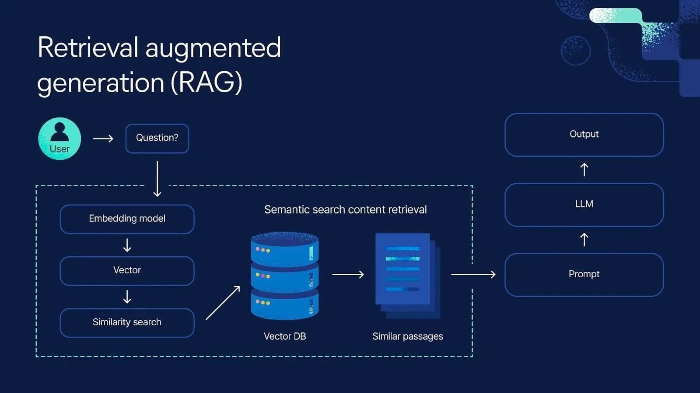

Tutor aziendale: Andrea Deangelis
Tutor scolastici: Prof. Simone Austeri e Prof. Federico Cini
Fondata a Terni nel 1999, Netaddiction è un leader editoriale in Italia nei settori dell'intrattenimento, del cinema e della tecnologia. Lavorare in questa realtà mi ha permesso di interfacciarmi con un flusso di lavoro aziendale moderno e altamente professionale.
Prima della fase pratica, ho acquisito competenze fondamentali su database relazionali (SQLite), reti IPv6 e sistemi Linux Ubuntu. Questa formazione teorica è stata essenziale per muovermi in autonomia e ha anticipato temi tecnici che avrei poi approfondito a scuola.
Il compito principale che è stato assegnato a me e ai miei colleghi è stato quello di sviluppare un sistema RAG (Retrieval Augmented Generation). L'obiettivo del software era quello di analizzare, comprendere e rispondere in modo dinamico a delle domande poste dall'utente, andando a leggere ed estrarre i dati corretti da una serie di file in formato CSV.
Tutti e tre i componenti del gruppo abbiamo adottato approcci differenti per risolvere lo stesso problema. Questo ci ha permesso, durante lo sviluppo, di metterci costantemente a confronto per analizzare i codici e capire quale fosse la soluzione più efficiente e ottimale in termini di prestazioni e precisione delle risposte.

A brief overview of the professional skills required to accomplish the project.
Developing a local RAG system required a combination of technical knowledge and adaptability. Working in a real world tech environment allowed me to practice and master several core skills:
Questo secondo stage mi ha permesso di fare un enorme salto di qualità. Ho approfondito tantissimo le mie conoscenze sul mondo dell'Intelligenza Artificiale, uscendo dalla semplice teoria ed entrando a contatto diretto con lo sviluppo di queste tecnologie. Oltre alle ovvie competenze tecniche su Python e Linux, l'aspetto che mi porto dietro con maggiore entusiasmo è stato lo sviluppo delle mie capacità di collaborazione e di problem-solving di gruppo, elementi fondamentali per qualunque programmatore.